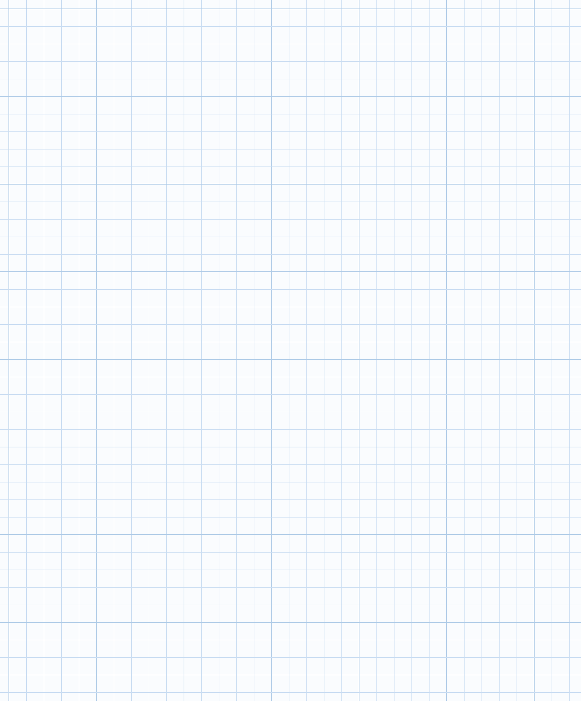
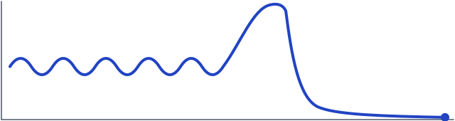
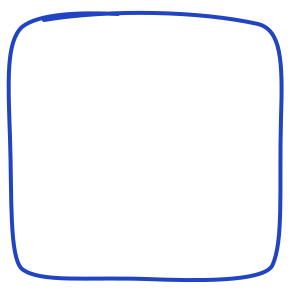

Pesquisa do Hospital Universitário Lauro Wanderley (HULW), em João Pessoa
Venha medir o seu fôlego.

ar nos pulmões
tempo
respirando normal
enche o peito
sopra com toda força
De 40 a 60 minutos, terça ou quinta à tarde, no HULW.
Você sopra num tubo, puxa e sopra com força e senta e levanta de uma cadeira por 1 minuto.
E não muda em nada o seu tratamento.
O código abre a página da pesquisa. Você deixa um telefone e a equipe liga.
Aponte a câmera do celular aqui

Quem pode participar
Adultos, com 18 anos ou mais, que têm cirrose (um tipo de doença no fígado) confirmada pelo médico e que conseguem sentar e levantar de uma cadeira sozinhos. Se você cuida de alguém assim, pode preencher por essa pessoa.
Doutorado de Fernanda Ferreira de Andrade (Faculdade de Medicina da USP), em parceria com a UFPB. Aprovada pelo Comitê de Ética em Pesquisa do HULW/UFPB, CAAE 99400626.5.0000.5183. Dúvidas sobre os seus direitos: (83) 3206-0754 ou cep.hulw@ebserh.gov.br. Página: mhfc-lgtm.github.io/pesquisa-respiracao-cirrose